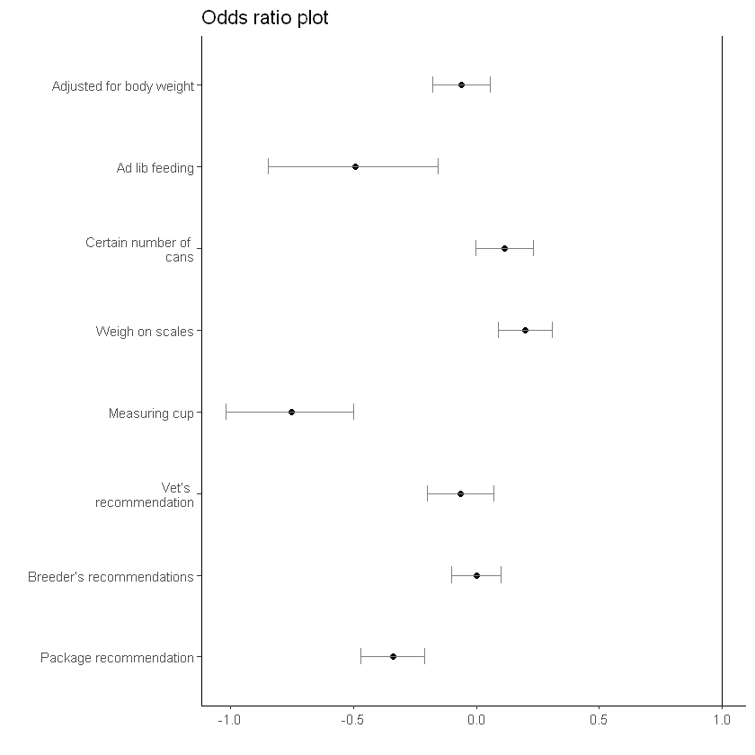
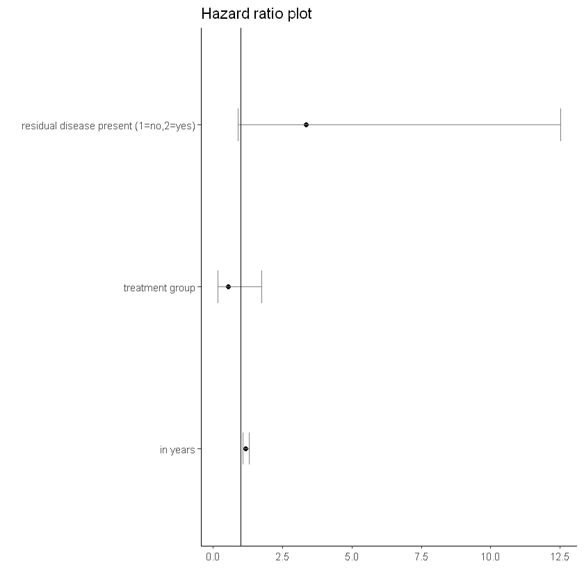
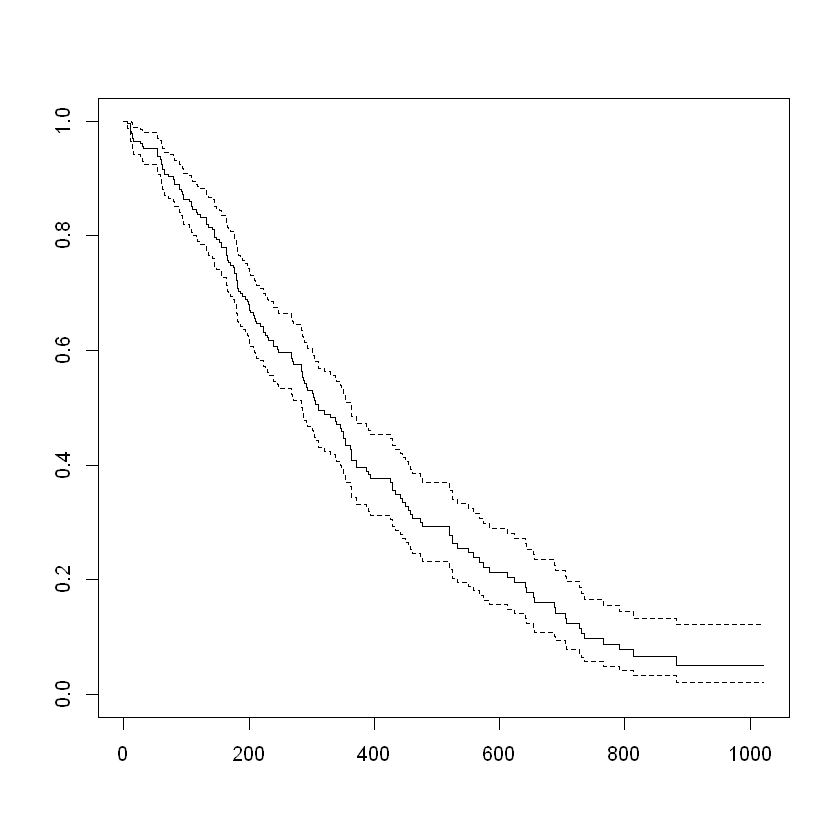
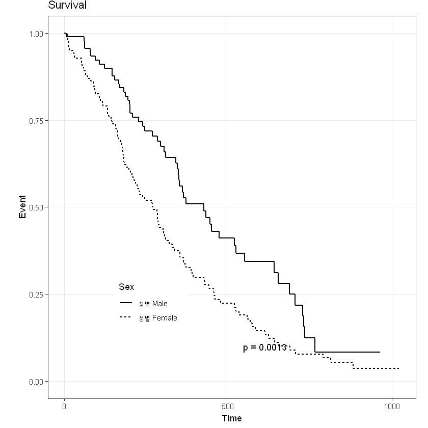
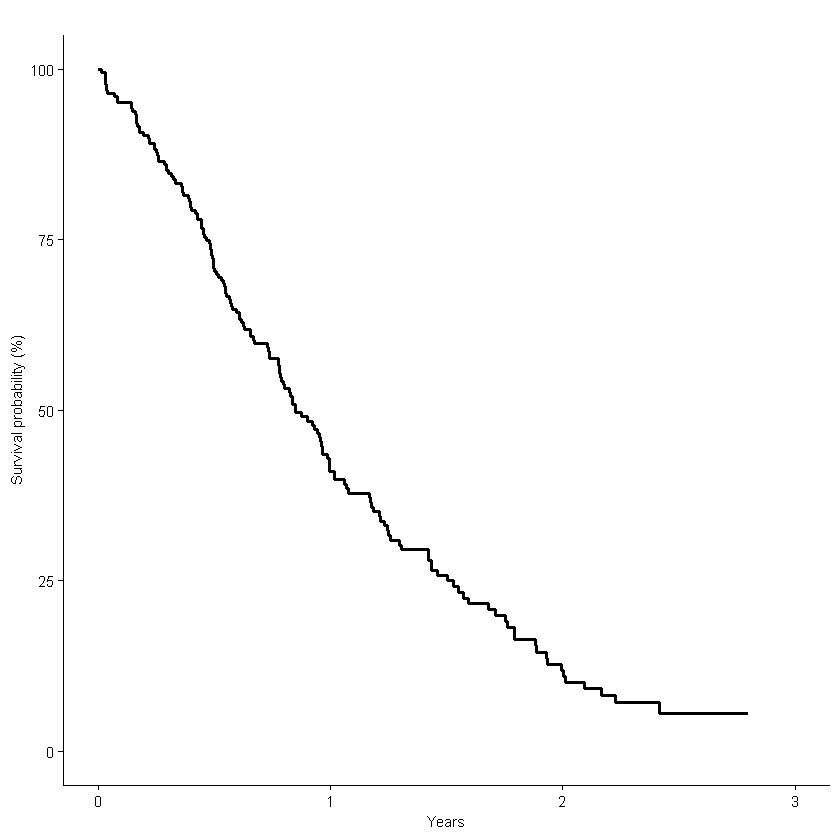

library(survival)
library(survminer)
library(epitools)
library(tidyverse)
library(ggplot2)Import
Odds Ratio
head(lung) # survival package에 있는 lung 데이터 사용| inst | time | status | age | sex | ph.ecog | ph.karno | pat.karno | meal.cal | wt.loss | |
|---|---|---|---|---|---|---|---|---|---|---|
| <dbl> | <dbl> | <dbl> | <dbl> | <dbl> | <dbl> | <dbl> | <dbl> | <dbl> | <dbl> | |
| 1 | 3 | 306 | 2 | 74 | 1 | 1 | 90 | 100 | 1175 | NA |
| 2 | 3 | 455 | 2 | 68 | 1 | 0 | 90 | 90 | 1225 | 15 |
| 3 | 3 | 1010 | 1 | 56 | 1 | 0 | 90 | 90 | NA | 15 |
| 4 | 5 | 210 | 2 | 57 | 1 | 1 | 90 | 60 | 1150 | 11 |
| 5 | 1 | 883 | 2 | 60 | 1 | 0 | 100 | 90 | NA | 0 |
| 6 | 12 | 1022 | 1 | 74 | 1 | 1 | 50 | 80 | 513 | 0 |
독립변수가 범주형변수일때
ref : (odds ratio](https://en.wikipedia.org/wiki/Odds_ratio)
A의 성공 확률 = \(\frac{P(A)}{1-P(A)}\)
B의 성공 확률 = \(\frac{P(B)}{1-P(B)}\)
Odds Ratio = A의 성공 확률 / B의 성공 확률
= \(\frac{\frac{P(A)}{1-P(A)}}{\frac{P(B)}{1-P(B)}}\)
해석
- 1보다 클 경우
- A집단의 성공할 확률이 B 집단이 성공할 확률보다 높다.
- 1보다 작을 경우
- A집단의 성공할 확률이 B 집단이 성공할 확률보다 낮다.
- 1일 경우
- A집단의 성공할 확률이 B 집단이 성공할 확률보다 같다.
Tip
어떤 확률을 기준으로 하느냐에 따라 해석은 달라진다.
ex) 어떤 검사 값이 정상이 나올 확률
- 1보다 클 경우
- A집단의 정상일 확률이 B 집단이 정상일 확률보다 높다.
- 1보다 작을 경우
- A집단의 정상일 확률이 B 집단이 정상일 확률보다 낮다.
- 1일 경우
- A집단의 정상일 확률이 B 집단이 정상일 확률보다 같다.
tmp <- lung %>% mutate(tmp = ifelse(ph.karno < 70, 1, 0));head(tmp)| inst | time | status | age | sex | ph.ecog | ph.karno | pat.karno | meal.cal | wt.loss | temp | tmp | |
|---|---|---|---|---|---|---|---|---|---|---|---|---|
| <dbl> | <dbl> | <dbl> | <dbl> | <dbl> | <dbl> | <dbl> | <dbl> | <dbl> | <dbl> | <dbl> | <dbl> | |
| 1 | 3 | 306 | 2 | 74 | 1 | 1 | 90 | 100 | 1175 | NA | 1 | 0 |
| 2 | 3 | 455 | 2 | 68 | 1 | 0 | 90 | 90 | 1225 | 15 | 1 | 0 |
| 3 | 3 | 1010 | 1 | 56 | 1 | 0 | 90 | 90 | NA | 15 | 1 | 0 |
| 4 | 5 | 210 | 2 | 57 | 1 | 1 | 90 | 60 | 1150 | 11 | 1 | 0 |
| 5 | 1 | 883 | 2 | 60 | 1 | 0 | 100 | 90 | NA | 0 | 1 | 0 |
| 6 | 12 | 1022 | 1 | 74 | 1 | 1 | 50 | 80 | 513 | 0 | 1 | 1 |
tmp %>% select(sex, tmp) %>% table() tmp
sex 0 1
1 122 15
2 80 10위의 표에서 tmp 가 0인 것이 성공, 1인 것이 실패로 보고, A집단이 성별 = 1, B집단이 성별 = 2로 본다면 오즈비는 아래와 같이 계산된다.
# A의 성공 확률
(122/137)/(15/137)
# = (122/137)/((137-122)/137)
8.13333333333333
# B의 성공 확률
(80/90)/(10/90)
# = (80/90)/((80-10)/90)
8
# 오즈비
((122/137)/(15/137))/((80/90)/(10/90))
1.01666666666667
rst <- oddsratio.wald(tmp %>% select(sex, tmp) %>% table())
rst- $data
-
$measureA matrix: 3 × 3 of type int 0 1 Total 1 122 15 137 2 80 10 90 Total 202 25 227
$p.valueA matrix: 2 × 3 of type dbl estimate lower upper 1 1.000000 NA NA 2 1.016667 0.435243 2.374791 A matrix: 2 × 3 of type dbl midp.exact fisher.exact chi.square 1 NA NA NA 2 0.9614893 1 0.9695386 - $correction
- FALSE
rst$data| 0 | 1 | Total | |
|---|---|---|---|
| 1 | 122 | 15 | 137 |
| 2 | 80 | 10 | 90 |
| Total | 202 | 25 | 227 |
rst$measure # Odds Ratio| estimate | lower | upper | |
|---|---|---|---|
| 1 | 1.000000 | NA | NA |
| 2 | 1.016667 | 0.435243 | 2.374791 |
1보다 크게 나왔으니까 sex=1인 집단이 성공할 활률이 sex=2인 집단이 성공할 확률보다 높다.
rst$p.value # fisher or chi-square test result| midp.exact | fisher.exact | chi.square | |
|---|---|---|---|
| 1 | NA | NA | NA |
| 2 | 0.9614893 | 1 | 0.9695386 |
p값이 0.05보다 높게 나와 오즈비가 유의하지 않다는 것을 알 수 있다.
rst$correction # correction
FALSE
독립변수가 연속형변수일때
독립변수를 연속형 변수로, 종속변수를 이산형(0 또는 1)binomial으로 지정한 일반화 선형 모형을 사용할 것이다.
Tip
물론 아래 방식은 독립변수가 범주형 변수일때도 사용 가능하다.
하지만 독립변수가 연속형 변수일때 독립변수가 범주형일때 사용한 방법으로는 사용이 불가능하다.
model <- glm(tmp ~ wt.loss, data = tmp, family = binomial)
summary(model)
Call:
glm(formula = tmp ~ wt.loss, family = binomial, data = tmp)
Deviance Residuals:
Min 1Q Median 3Q Max
-0.5488 -0.4825 -0.4708 -0.4651 2.1864
Coefficients:
Estimate Std. Error z value Pr(>|z|)
(Intercept) -2.169588 0.279940 -7.750 9.18e-15 ***
wt.loss 0.005184 0.016325 0.318 0.751
---
Signif. codes: 0 '***' 0.001 '**' 0.01 '*' 0.05 '.' 0.1 ' ' 1
(Dispersion parameter for binomial family taken to be 1)
Null deviance: 146.04 on 213 degrees of freedom
Residual deviance: 145.94 on 212 degrees of freedom
(14 observations deleted due to missingness)
AIC: 149.94
Number of Fisher Scoring iterations: 4odds_ratio <- exp(coef(model))[[2]] # 오즈비
ci_lower <- exp(confint(model))[2,][1] # 95% 신뢰구간 하한
ci_upper <- exp(confint(model))[2,][2] # 95% 신뢰구간 상한
list(odds_ratio=odds_ratio,ci_lower=ci_lower,ci_upper=ci_upper)Waiting for profiling to be done...
Waiting for profiling to be done...
- $odds_ratio
- 1.00519779379364
- $ci_lower
- 2.5 %: 0.971395088673715
- $ci_upper
- 97.5 %: 1.03624397215135
Odds Ratio Plot
Data Ref: stackoverflow
and Odds plot code made by me
boxLabels = c("Package recommendation", "Breeder’s recommendations", "Vet’s
recommendation", "Measuring cup", "Weigh on scales", "Certain number of
cans", "Ad lib feeding", "Adjusted for body weight")df <- data.frame(yAxis = length(boxLabels):1,
boxOdds = log(c(0.9410685,
0.6121181, 1.1232907, 1.2222137, 0.4712629, 0.9376822, 1.0010816,
0.7121452)),
boxCILow = c(-0.1789719, -0.8468693,-0.00109809, 0.09021224,
-1.0183040, -0.2014975, -0.1001832,-0.4695449),
boxCIHigh = c(0.05633076, -0.1566818, 0.2326694, 0.3104405,
-0.4999281, 0.07093752, 0.1018351, -0.2113544))ggplot(data = df,
mapping = aes(y = forcats::fct_rev(f = forcats::fct_inorder(f = boxLabels)))) +
geom_point(aes(x = boxOdds),size = 1.5, color = "black")+
geom_errorbarh(aes(xmax = boxCIHigh, xmin = boxCILow), size = .5, height = .2, color = "gray50") +
theme_classic()+
geom_vline(xintercept = 1) + # 오즈비는 1을 기준으로 보기 때문에 1의 수직선을 그려줘야 한다.
theme(panel.grid.minor = element_blank()) +
labs(x = "", y = "", title = "Odds ratio plot") +
scale_y_discrete(labels = boxLabels)
# the method of save ggplot file
# You can allocate path
ggsave(file= paste0(path,"name.png", sep=''), width=15, height=8, units = c("cm"))Hazard Ratio
head(ovarian) # survival 패키지에 내장된 데이터 사용| futime | fustat | age | resid.ds | rx | ecog.ps | |
|---|---|---|---|---|---|---|
| <dbl> | <dbl> | <dbl> | <dbl> | <dbl> | <dbl> | |
| 1 | 59 | 1 | 72.3315 | 2 | 1 | 1 |
| 2 | 115 | 1 | 74.4932 | 2 | 1 | 1 |
| 3 | 156 | 1 | 66.4658 | 2 | 1 | 2 |
| 4 | 421 | 0 | 53.3644 | 2 | 2 | 1 |
| 5 | 431 | 1 | 50.3397 | 2 | 1 | 1 |
| 6 | 448 | 0 | 56.4301 | 1 | 1 | 2 |
데이터 설명
- futime: survival or censoring time
- fustat: censoring status
- age: in years
- resid.ds: residual disease present (1=no,2=yes)
- rx: treatment group
- ecog.ps: ECOG performance status (1 is better, see reference)
간단한 모형 설정
- Surv()에 시간
time과 사건event를 지정해주고 다변량 변수로서 rx와 age를 지정해주었다.
summary(coxph(Surv(time = futime, event = fustat) ~ as.factor(rx) + age, data=ovarian))Call:
coxph(formula = Surv(time = futime, event = fustat) ~ as.factor(rx) +
age, data = ovarian)
n= 26, number of events= 12
coef exp(coef) se(coef) z Pr(>|z|)
as.factor(rx)2 -0.80397 0.44755 0.63205 -1.272 0.20337
age 0.14733 1.15873 0.04615 3.193 0.00141 **
---
Signif. codes: 0 '***' 0.001 '**' 0.01 '*' 0.05 '.' 0.1 ' ' 1
exp(coef) exp(-coef) lower .95 upper .95
as.factor(rx)2 0.4475 2.234 0.1297 1.545
age 1.1587 0.863 1.0585 1.268
Concordance= 0.798 (se = 0.076 )
Likelihood ratio test= 15.89 on 2 df, p=4e-04
Wald test = 13.47 on 2 df, p=0.001
Score (logrank) test = 18.56 on 2 df, p=9e-05
Note
as.factor는 R에서 R의 변수로서 인식하도록 변환해준 것이라 보면 된다.
단변량을 여러개 한 번에 보고 싶을때
Note
물론 다변량으로 확장 가능한 코드이다.
cova <- c("resid.ds","rx","age") # 보고 싶은 단변량 변수명을 입력한다.univ <- lapply(cova, function(x) as.formula(paste('Surv(time = futime, event = fustat)~', x)))
univ
# 아래의 리스트를 생성
# Surv(time = futime, event = fustat) ~ resid.ds
# Surv(time = futime, event = fustat) ~ rx
# Surv(time = futime, event = fustat) ~ age[[1]]
Surv(time = futime, event = fustat) ~ resid.ds
<environment: 0x000000002f8ff350>
[[2]]
Surv(time = futime, event = fustat) ~ rx
<environment: 0x000000002f9020f0>
[[3]]
Surv(time = futime, event = fustat) ~ age
<environment: 0x000000002519fd00>
Tip
lapply
- 리스트 또는 벡터와 같은 객체에 함수를 적용하는 데 사용
univ_rst <- lapply(univ, function(x) {
model <- coxph(x, data = ovarian)
summary <- summary(model)
HR <- summary$coef[2] # Hazard ratio
CI_lower <- summary$conf.int[,"lower .95"] # Lower bound of confidence interval
CI_upper <- summary$conf.int[,"upper .95"] # Upper bound of confidence interval
p_value <- summary$wald["pvalue"] # P-value
tab <- c(HR, CI_lower, CI_upper)
names(tab) <- c("HR", "lower", "upper")
return(tab)
})콕스 비례 모형
- 생존 분석에서 쓰이는 통계 모형
- 준모수적 방법 이용하여 생존함수 추정
- 기본 가정: 비례위험은 시간에 상관없이 어떤 변수의 위험비가 항상 일정하다.
ref: 콕스 비례 모형
univ_rst # 리스트별로 Hazard Rtio, 95% 신뢰구간을 구했다.- HR
- 3.35070358052788
- lower
- 0.896998922171813
- upper
- 12.5164191472818
- HR
- 0.550801907277936
- lower
- 0.17432073353539
- upper
- 1.74037095248581
- HR
- 1.17541333170913
- lower
- 1.0662320711259
- upper
- 1.29577466085843
tab <- data.frame(t(data.frame(univ_rst, check.names = FALSE)))
# check.names = FALSE는 유효한 변수명인지 확인하지 말라는 옵션, 기본은 TRUE다.
tab| HR | lower | upper | |
|---|---|---|---|
| <dbl> | <dbl> | <dbl> | |
| c(HR = 3.35070358052788, lower = 0.896998922171813, upper = 12.5164191472818 | 3.3507036 | 0.8969989 | 12.516419 |
| c(HR = 0.550801907277936, lower = 0.17432073353539, upper = 1.74037095248581 | 0.5508019 | 0.1743207 | 1.740371 |
| c(HR = 1.17541333170913, lower = 1.0662320711259, upper = 1.29577466085843 | 1.1754133 | 1.0662321 | 1.295775 |
Hazard Ratio Plot
df <- data.frame(yAxis = length(cova):1, # 그래프에 그려지는 변수의 순서를 지정해주기 위함
boxhz = tab$HR,
boxCILow = tab$lower,
boxCIHigh = tab$upper)ggplot(data = df,
mapping = aes(y = forcats::fct_rev(f = forcats::fct_inorder(f = cova)))) +
geom_point(aes(x = boxhz), size = 1.5, color = "black")+
geom_errorbarh(aes(xmax = boxCIHigh, xmin = boxCILow), size = .5, height = .2, color = "gray50") +
theme_classic()+
geom_vline(xintercept = 1) +
theme(panel.grid.minor = element_blank()) +
labs(x = "", y = "", title = "Hazard ratio plot") +
scale_y_discrete(labels = rev(c('residual disease present (1=no,2=yes)',
'treatment group',
'in years')))
Survival Analysis
카플란-마이어 생존분석
- 시간에 따른 생존 비율 추정
- 비모수적 분석방법
Surv(time = lung$time, event = lung$status) [1] 306 455 1010+ 210 883 1022+ 310 361 218 166 170 654
[13] 728 71 567 144 613 707 61 88 301 81 624 371
[25] 394 520 574 118 390 12 473 26 533 107 53 122
[37] 814 965+ 93 731 460 153 433 145 583 95 303 519
[49] 643 765 735 189 53 246 689 65 5 132 687 345
[61] 444 223 175 60 163 65 208 821+ 428 230 840+ 305
[73] 11 132 226 426 705 363 11 176 791 95 196+ 167
[85] 806+ 284 641 147 740+ 163 655 239 88 245 588+ 30
[97] 179 310 477 166 559+ 450 364 107 177 156 529+ 11
[109] 429 351 15 181 283 201 524 13 212 524 288 363
[121] 442 199 550 54 558 207 92 60 551+ 543+ 293 202
[133] 353 511+ 267 511+ 371 387 457 337 201 404+ 222 62
[145] 458+ 356+ 353 163 31 340 229 444+ 315+ 182 156 329
[157] 364+ 291 179 376+ 384+ 268 292+ 142 413+ 266+ 194 320
[169] 181 285 301+ 348 197 382+ 303+ 296+ 180 186 145 269+
[181] 300+ 284+ 350 272+ 292+ 332+ 285 259+ 110 286 270 81
[193] 131 225+ 269 225+ 243+ 279+ 276+ 135 79 59 240+ 202+
[205] 235+ 105 224+ 239 237+ 173+ 252+ 221+ 185+ 92+ 13 222+
[217] 192+ 183 211+ 175+ 197+ 203+ 116 188+ 191+ 105+ 174+ 177+plot(Surv(time = lung$time, event = lung$status))
Log-Rank Test
- 카플란-마이어 생존분석에서 나온 생존 함수가 유의하게 다른지 검정하는 방법
- 서로 다른 두 집단의 생존률(사건 발생률)을 비교하는 비모수적 가설 검정법
survdiff는 집단 간의 생존함수를 비교하기 위해 사용- p값이 0.05보다 작을 경우 생존 곡선 간에 차이가 있는 것으로 본다.
survdiff(Surv(time = time, event = status) ~ sex, data=lung) # lung 데이터에서 성별에 따른 생존곡선 차이 비교Call:
survdiff(formula = Surv(time = time, event = status) ~ sex, data = lung)
N Observed Expected (O-E)^2/E (O-E)^2/V
sex=1 138 112 91.6 4.55 10.3
sex=2 90 53 73.4 5.68 10.3
Chisq= 10.3 on 1 degrees of freedom, p= 0.001 p 값이 0.0001로 나와 생존 곡선 간에 차이가 있다는 것을 알 수 있다.
Survival plot
Ref : ggkm
ggkm <- function(sfit, returns = FALSE,
xlabs = "Time", ylabs = "survival probability",
ystratalabs = NULL, ystrataname = NULL,
timeby = 100, main = "Kaplan-Meier Plot",
pval = TRUE, ...) {
require(plyr)
require(ggplot2)
require(survival)
require(gridExtra)
if(is.null(ystratalabs)) {
ystratalabs <- as.character(levels(summary(sfit)$strata))
}
m <- max(nchar(ystratalabs))
if(is.null(ystrataname)) ystrataname <- "Strata"
times <- seq(0, max(sfit$time), by = timeby)
.df <- data.frame(time = sfit$time, n.risk = sfit$n.risk,
n.event = sfit$n.event, surv = sfit$surv, strata = summary(sfit, censored = T)$strata,
upper = sfit$upper, lower = sfit$lower)
levels(.df$strata) <- ystratalabs
zeros <- data.frame(time = 0, surv = 1, strata = factor(ystratalabs, levels=levels(.df$strata)),
upper = 1, lower = 1)
.df <- rbind.fill(zeros, .df)
d <- length(levels(.df$strata))
p <- ggplot(.df, aes(time, surv, group = strata)) +
geom_step(aes(linetype = strata), size = 0.7) +
theme_bw() +
theme(axis.title.x = element_text(vjust = 0.5)) +
scale_x_continuous(xlabs, breaks = times, limits = c(0, max(sfit$time))) +
scale_y_continuous(ylabs, limits = c(0, 1)) +
theme(panel.grid.minor = element_blank()) +
theme(legend.position = c(ifelse(m < 10, .28, .35), ifelse(d < 4, .25, .35))) +
theme(legend.key = element_rect(colour = NA)) +
labs(linetype = ystrataname) +
theme(plot.margin = unit(c(0, 1, .5, ifelse(m < 10, 1.5, 2.5)), "lines")) +
ggtitle(main)
if(pval) {
sdiff <- survdiff(eval(sfit$call$formula), data = eval(sfit$call$data))
pval <- pchisq(sdiff$chisq, length(sdiff$n)-1, lower.tail = FALSE)
pvaltxt <- ifelse(pval < 0.0001, "p < 0.0001", paste("p =", sprintf("%.4f", pval) ))
p <- p + annotate("text", x = 0.6 * max(sfit$time), y = 0.1, label = pvaltxt)
}
## Plotting the graphs
print(p)
if(returns) return(p)
}사용법
labs=paste("성별",c("Male","Female")) # legend 항목 지정 test-ref 순
strataname=paste("Sex") # legend 명 지정lung$temp=ifelse(lung$sex==2,0,1) # Ref 지정, Ref=0, Test-Ref 순으로 그래프가 그려짐
# 여기서는 여성(sex=2)를 ref로 지정해주었다.
Note
변수에 ref가 지정되지 않으면 결과 해석에 혼동이 있을 수 있으니 ref 지정이 필요
fit=survfit(Surv(time = time, event = status)~temp ,data=lung)
fitCall: survfit(formula = Surv(time = time, event = status) ~ temp, data = lung)
n events median 0.95LCL 0.95UCL
temp=0 90 53 426 348 550
temp=1 138 112 270 212 310ggkm(fit,timeby=500,ystratalabs=labs,ystrataname=strataname, main = 'Survival', ylab='Event')
Warning
여러개 그룹에 대하여 생존 분석을 시행하고자 할때 log rank test 해석에 주의하여야 한다.
해당 결과에 대한 대립가설은 그룹 중 하나라도 다른 생존곡선이 존재한다라는 의미가 되기 때문에 각 집단별로 비교해보고 차이가 유의한 그룹들을 찾는 것이 낫다.
참고로, 아래와 같이 summary 해주면 단변량의 항목별로 시간별로 볼 수 있다.
또한, 가장 마지막 값 저장하기 위해 아래 코드 사용 가능
sink('summary.txt')
summary(fit)
sink()summary(fit)Call: survfit(formula = Surv(time = time, event = status) ~ temp, data = lung)
temp=0
time n.risk n.event survival std.err lower 95% CI upper 95% CI
5 90 1 0.9889 0.0110 0.9675 1.000
60 89 1 0.9778 0.0155 0.9478 1.000
61 88 1 0.9667 0.0189 0.9303 1.000
62 87 1 0.9556 0.0217 0.9139 0.999
79 86 1 0.9444 0.0241 0.8983 0.993
81 85 1 0.9333 0.0263 0.8832 0.986
95 83 1 0.9221 0.0283 0.8683 0.979
107 81 1 0.9107 0.0301 0.8535 0.972
122 80 1 0.8993 0.0318 0.8390 0.964
145 79 2 0.8766 0.0349 0.8108 0.948
153 77 1 0.8652 0.0362 0.7970 0.939
166 76 1 0.8538 0.0375 0.7834 0.931
167 75 1 0.8424 0.0387 0.7699 0.922
182 71 1 0.8305 0.0399 0.7559 0.913
186 70 1 0.8187 0.0411 0.7420 0.903
194 68 1 0.8066 0.0422 0.7280 0.894
199 67 1 0.7946 0.0432 0.7142 0.884
201 66 2 0.7705 0.0452 0.6869 0.864
208 62 1 0.7581 0.0461 0.6729 0.854
226 59 1 0.7452 0.0471 0.6584 0.843
239 57 1 0.7322 0.0480 0.6438 0.833
245 54 1 0.7186 0.0490 0.6287 0.821
268 51 1 0.7045 0.0501 0.6129 0.810
285 47 1 0.6895 0.0512 0.5962 0.798
293 45 1 0.6742 0.0523 0.5791 0.785
305 43 1 0.6585 0.0534 0.5618 0.772
310 42 1 0.6428 0.0544 0.5447 0.759
340 39 1 0.6264 0.0554 0.5267 0.745
345 38 1 0.6099 0.0563 0.5089 0.731
348 37 1 0.5934 0.0572 0.4913 0.717
350 36 1 0.5769 0.0579 0.4739 0.702
351 35 1 0.5604 0.0586 0.4566 0.688
361 33 1 0.5434 0.0592 0.4390 0.673
363 32 1 0.5265 0.0597 0.4215 0.658
371 30 1 0.5089 0.0603 0.4035 0.642
426 26 1 0.4893 0.0610 0.3832 0.625
433 25 1 0.4698 0.0617 0.3632 0.608
444 24 1 0.4502 0.0621 0.3435 0.590
450 23 1 0.4306 0.0624 0.3241 0.572
473 22 1 0.4110 0.0626 0.3050 0.554
520 19 1 0.3894 0.0629 0.2837 0.534
524 18 1 0.3678 0.0630 0.2628 0.515
550 15 1 0.3433 0.0634 0.2390 0.493
641 11 1 0.3121 0.0649 0.2076 0.469
654 10 1 0.2808 0.0655 0.1778 0.443
687 9 1 0.2496 0.0652 0.1496 0.417
705 8 1 0.2184 0.0641 0.1229 0.388
728 7 1 0.1872 0.0621 0.0978 0.359
731 6 1 0.1560 0.0590 0.0743 0.328
735 5 1 0.1248 0.0549 0.0527 0.295
765 3 1 0.0832 0.0499 0.0257 0.270
temp=1
time n.risk n.event survival std.err lower 95% CI upper 95% CI
11 138 3 0.9783 0.0124 0.9542 1.000
12 135 1 0.9710 0.0143 0.9434 0.999
13 134 2 0.9565 0.0174 0.9231 0.991
15 132 1 0.9493 0.0187 0.9134 0.987
26 131 1 0.9420 0.0199 0.9038 0.982
30 130 1 0.9348 0.0210 0.8945 0.977
31 129 1 0.9275 0.0221 0.8853 0.972
53 128 2 0.9130 0.0240 0.8672 0.961
54 126 1 0.9058 0.0249 0.8583 0.956
59 125 1 0.8986 0.0257 0.8496 0.950
60 124 1 0.8913 0.0265 0.8409 0.945
65 123 2 0.8768 0.0280 0.8237 0.933
71 121 1 0.8696 0.0287 0.8152 0.928
81 120 1 0.8623 0.0293 0.8067 0.922
88 119 2 0.8478 0.0306 0.7900 0.910
92 117 1 0.8406 0.0312 0.7817 0.904
93 116 1 0.8333 0.0317 0.7734 0.898
95 115 1 0.8261 0.0323 0.7652 0.892
105 114 1 0.8188 0.0328 0.7570 0.886
107 113 1 0.8116 0.0333 0.7489 0.880
110 112 1 0.8043 0.0338 0.7408 0.873
116 111 1 0.7971 0.0342 0.7328 0.867
118 110 1 0.7899 0.0347 0.7247 0.861
131 109 1 0.7826 0.0351 0.7167 0.855
132 108 2 0.7681 0.0359 0.7008 0.842
135 106 1 0.7609 0.0363 0.6929 0.835
142 105 1 0.7536 0.0367 0.6851 0.829
144 104 1 0.7464 0.0370 0.6772 0.823
147 103 1 0.7391 0.0374 0.6694 0.816
156 102 2 0.7246 0.0380 0.6538 0.803
163 100 3 0.7029 0.0389 0.6306 0.783
166 97 1 0.6957 0.0392 0.6230 0.777
170 96 1 0.6884 0.0394 0.6153 0.770
175 94 1 0.6811 0.0397 0.6076 0.763
176 93 1 0.6738 0.0399 0.5999 0.757
177 92 1 0.6664 0.0402 0.5922 0.750
179 91 2 0.6518 0.0406 0.5769 0.736
180 89 1 0.6445 0.0408 0.5693 0.730
181 88 2 0.6298 0.0412 0.5541 0.716
183 86 1 0.6225 0.0413 0.5466 0.709
189 83 1 0.6150 0.0415 0.5388 0.702
197 80 1 0.6073 0.0417 0.5309 0.695
202 78 1 0.5995 0.0419 0.5228 0.687
207 77 1 0.5917 0.0420 0.5148 0.680
210 76 1 0.5839 0.0422 0.5068 0.673
212 75 1 0.5762 0.0424 0.4988 0.665
218 74 1 0.5684 0.0425 0.4909 0.658
222 72 1 0.5605 0.0426 0.4829 0.651
223 70 1 0.5525 0.0428 0.4747 0.643
229 67 1 0.5442 0.0429 0.4663 0.635
230 66 1 0.5360 0.0431 0.4579 0.627
239 64 1 0.5276 0.0432 0.4494 0.619
246 63 1 0.5192 0.0433 0.4409 0.611
267 61 1 0.5107 0.0434 0.4323 0.603
269 60 1 0.5022 0.0435 0.4238 0.595
270 59 1 0.4937 0.0436 0.4152 0.587
283 57 1 0.4850 0.0437 0.4065 0.579
284 56 1 0.4764 0.0438 0.3979 0.570
285 54 1 0.4676 0.0438 0.3891 0.562
286 53 1 0.4587 0.0439 0.3803 0.553
288 52 1 0.4499 0.0439 0.3716 0.545
291 51 1 0.4411 0.0439 0.3629 0.536
301 48 1 0.4319 0.0440 0.3538 0.527
303 46 1 0.4225 0.0440 0.3445 0.518
306 44 1 0.4129 0.0440 0.3350 0.509
310 43 1 0.4033 0.0441 0.3256 0.500
320 42 1 0.3937 0.0440 0.3162 0.490
329 41 1 0.3841 0.0440 0.3069 0.481
337 40 1 0.3745 0.0439 0.2976 0.471
353 39 2 0.3553 0.0437 0.2791 0.452
363 37 1 0.3457 0.0436 0.2700 0.443
364 36 1 0.3361 0.0434 0.2609 0.433
371 35 1 0.3265 0.0432 0.2519 0.423
387 34 1 0.3169 0.0430 0.2429 0.413
390 33 1 0.3073 0.0428 0.2339 0.404
394 32 1 0.2977 0.0425 0.2250 0.394
428 29 1 0.2874 0.0423 0.2155 0.383
429 28 1 0.2771 0.0420 0.2060 0.373
442 27 1 0.2669 0.0417 0.1965 0.362
455 25 1 0.2562 0.0413 0.1868 0.351
457 24 1 0.2455 0.0410 0.1770 0.341
460 22 1 0.2344 0.0406 0.1669 0.329
477 21 1 0.2232 0.0402 0.1569 0.318
519 20 1 0.2121 0.0397 0.1469 0.306
524 19 1 0.2009 0.0391 0.1371 0.294
533 18 1 0.1897 0.0385 0.1275 0.282
558 17 1 0.1786 0.0378 0.1179 0.270
567 16 1 0.1674 0.0371 0.1085 0.258
574 15 1 0.1562 0.0362 0.0992 0.246
583 14 1 0.1451 0.0353 0.0900 0.234
613 13 1 0.1339 0.0343 0.0810 0.221
624 12 1 0.1228 0.0332 0.0722 0.209
643 11 1 0.1116 0.0320 0.0636 0.196
655 10 1 0.1004 0.0307 0.0552 0.183
689 9 1 0.0893 0.0293 0.0470 0.170
707 8 1 0.0781 0.0276 0.0390 0.156
791 7 1 0.0670 0.0259 0.0314 0.143
814 5 1 0.0536 0.0239 0.0223 0.128
883 3 1 0.0357 0.0216 0.0109 0.117Appendix
아래는 오즈비(Odds Ratio), 위험비(Hazard Ratio), 생존분석(Survival Analysis) 함수 구현한 것이다. 반복 사용할때 유용하겠지!
p값 정리 function
pfunc<- function(p_value){
if (p_value <= 0.0001) {
print("<.0001")
} else if (p_value >= 1) {
print(">.9999")
}
else {
print(sprintf("%.4f", p_value))
}
}사용법
pfunc(0)[1] "<.0001"pfunc(0.0001)[1] "<.0001"pfunc(0.3164889)[1] "0.3165"pfunc(1.5)[1] ">.9999"- 오즈비 function 범주형일 때
oddsfunc <- function(model){
odds_ratio <- round(exp(coef(model)),2)[2]
confint_odds_ratio <- exp(confint(model))
confint_odds_ratio <- round(data.frame(lower = confint_odds_ratio[, 1], upper = confint_odds_ratio[, 2])[2,],2)
odds <- paste(odds_ratio[1],'(',confint_odds_ratio[1],'-',confint_odds_ratio[2],')')
return(odds)
}
chis_fisher_test <- function(df, cond1, cond2){
tst <- matrix(c(df %>% filter(cond1 == 1 & cond2 == 1) %>% nrow(),
df %>% filter(cond1 == 1 & cond2 == 0) %>% nrow(),
df %>% filter(cond1 == 0 & cond2 == 1) %>% nrow(),
df %>% filter(cond1 == 0 & cond2 == 0) %>% nrow()),
ncol=2)
per <- matrix(round((tst[,1]/(tst[,1]+tst[,2]))*100,0),ncol=1)
if (min(tst) < 5) {
chi <- pfunc(round(fisher.test(tst)$p.value,4))
} else {
chi <- pfunc(round(chisq.test(tst)$p.value,4))
}
model <- glm(cond1 ~ cond2, data = df, family = binomial)
list(test = tst, sum = rbind(sum(tst[1,]),sum(tst[2,])),
per = per, p_value = rbind(chi,''),
oddsratio = rbind(oddsfunc(model),''))
}사용법
tmp_1 <- lung %>% mutate(tmp01 = ifelse(ph.karno < 70, 1, 0),
tmp02 = ifelse(status == 1, 1, 0));head(tmp_1)| inst | time | status | age | sex | ph.ecog | ph.karno | pat.karno | meal.cal | wt.loss | temp | tmp01 | tmp02 | |
|---|---|---|---|---|---|---|---|---|---|---|---|---|---|
| <dbl> | <dbl> | <dbl> | <dbl> | <dbl> | <dbl> | <dbl> | <dbl> | <dbl> | <dbl> | <dbl> | <dbl> | <dbl> | |
| 1 | 3 | 306 | 2 | 74 | 1 | 1 | 90 | 100 | 1175 | NA | 1 | 0 | 0 |
| 2 | 3 | 455 | 2 | 68 | 1 | 0 | 90 | 90 | 1225 | 15 | 1 | 0 | 0 |
| 3 | 3 | 1010 | 1 | 56 | 1 | 0 | 90 | 90 | NA | 15 | 1 | 0 | 1 |
| 4 | 5 | 210 | 2 | 57 | 1 | 1 | 90 | 60 | 1150 | 11 | 1 | 0 | 0 |
| 5 | 1 | 883 | 2 | 60 | 1 | 0 | 100 | 90 | NA | 0 | 1 | 0 | 0 |
| 6 | 12 | 1022 | 1 | 74 | 1 | 1 | 50 | 80 | 513 | 0 | 1 | 1 | 1 |
일단 범주형으로 만들어 주고(있으면 안 만들어도 되겠지)
chis_fisher_test(tmp_1,tmp_1$tmp01,tmp_1$tmp02)[1] "0.2361"Waiting for profiling to be done...
- $test
-
$sumA matrix: 2 × 2 of type int 4 59 21 143
$perA matrix: 2 × 1 of type int 63 164
$p_valueA matrix: 2 × 1 of type dbl 6 13
$oddsratioA matrix: 2 × 1 of type chr chi 0.2361 A matrix: 2 × 1 of type chr 0.46 ( 0.13 - 1.28 )
- Survival Analysis 전체 생존 기간에 대하여 볼때, 변수 별도 보지 않고 event랑 time만 볼때
surv_func <- function(df, date_col, event_col){
df_temp <- df[complete.cases(df[, c(date_col, event_col)]), ]
date_temp <- df_temp[, date_col] / 365.25
surv_temp <- Surv(time = date_temp, event = as.numeric(df_temp[, event_col]))
result1_temp<-coxph(surv_temp~1, data=df_temp)
result2_temp <- summary(survfit(surv_temp ~ 1, data = df_temp))
summary(result1_temp)
list(cbind(round(result2_temp$surv[length(result2_temp$surv)],3),
paste('(',round(result2_temp$lower[length(result2_temp$lower)],3),'-',
round(result2_temp$upper[length(result2_temp$upper)],3),')')),"cox"=result1_temp)
}사용법
surv_func(tmp_1,"time","status")[[1]]
[,1] [,2]
[1,] "0.05" "( 0.021 - 0.123 )"
$cox
Call: coxph(formula = surv_temp ~ 1, data = df_temp)
Null model
log likelihood= -749.9098
n= 228 - Survival Analysis 단변량(다변량 확장 가능)에 대해 Survival probability와 95% 신뢰구간, Log rank Test 수행
surv_func_each <- function(df, date_col, event_col, cova_col) {
df_temp <- df[complete.cases(df[, c(date_col, event_col, cova_col)]), ]
date_temp <- df_temp[, date_col] / 365.25
surv_temp <- Surv(time = date_temp, event = as.numeric(df_temp[, event_col]))
coxph_fit <- coxph(as.formula(paste("surv_temp ~", cova_col)), data = df_temp)
result_temp <- summary(survfit(surv_temp ~ df_temp[, cova_col], data = df_temp))
# p_val <- pfunc(round(summary(coxph_fit)$coefficients[paste(cova_col), "Pr(>|z|)"],4))
nor <- survdiff(surv_temp ~ df_temp[, cova_col], data = df_temp)
nor_p <- pfunc(round((1 - pchisq(nor$chisq, length(nor$n) - 1)),4))
list("surv" = result_temp, "nor_p" = nor_p,"coxph_fit"=coxph_fit)
}
surv_log_p <-function(df,date_col,event_col,cova_col){
df_temp <- surv_func_each(df,date_col,event_col,cova_col)
filename <- paste(path4,cova_col,"_",".txt", sep='')
sink(filename)
print(df_temp$surv) #데이터 결과 txt로 저장
sink()
lines <- readLines(filename)
index <- which(grepl( " time n.risk n.event survival std.err lower 95% CI upper 95% CI", lines))
line1 <- strsplit(lines[index - 3][2], "\\s+")[[1]]
line2 <- strsplit(tail(lines, n = 2)[1], "\\s+")[[1]]
out <- rbind(cbind(line2[5],paste('(',line2[7],'-',line2[8],')'),df_temp$nor_p),
cbind(line1[5],paste('(',line1[7],'-',line1[8],')'),''))
colnames(out) <- c("Survival","95% CI","Log rank test")
list(data.frame(out), df_temp$coxph_fit, df_temp$nor_p)
}사용법(저장하고 해야해서 문법 구현만)
surv_log_p(tmp_1,"time","status","tmp01")- 만든 Survival plot
surv_figure <-function(df,df2){
ggsurvplot(survfit(df2), data = df,
title = labs(title=''),
# risk.table =TRUE,
# risk.table.fontsize = 3,
tables.height=0.15,
palette = c("black"),
xlab = "Years",
# ylab = name1,
tables.theme = theme_cleantable(),
fun = 'pct',
conf.int = FALSE,
break.x.by = 1,
# surv.scale="percent",
censor= FALSE,
# xlim = c(0,13),
font.title = c(9, "black"),
font.x = c(9, "black"),
font.y = c(9, "black"),
font.tickslab = c(9, "plain", "black"),
font.legend = c(9,"bold"),
# legend = c(0.2, 0.4),
legend.title = element_blank(),
legend = "none")
# return(ggsave(file= paste0(path,name2,".png", sep=''), width=15, height=8, units = c("cm")))
# 위는 저장하는 거라 path 지정해서 저장하면 된다.
}사용법
surv_figure(tmp,surv_func(tmp_1,"time","status")[[2]])
참고
surv_func(tmp_1,"time","status")[[2]]Call: coxph(formula = surv_temp ~ 1, data = df_temp)
Null model
log likelihood= -749.9098
n= 228